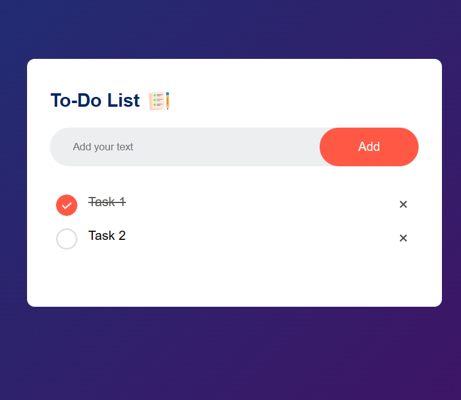
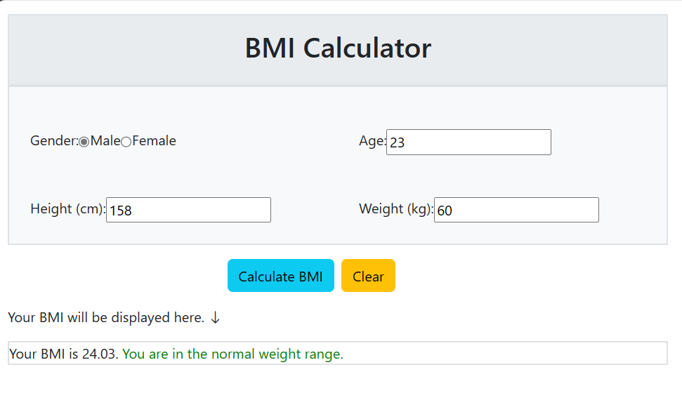

This websites shows the weather report of particular city which you have entered.
Check it here.

To-Do List App
In this website we can keep note of our daily task and if completed the task we can mark it as completed.
Also it have local storage option use of this is the tasks are not get erased when we reload the page.
Check it here.

BMI Calculator App
This websites show the body mass index. And shows you are in which weight range.
Check it here.